Computer Science Coursework by Cedric Borgers
Analysis
Table of Contents
- Outline of the Project and Background
- Stakeholders
- Why is this Problem Best Solved by Computational Methods
- Justification of Computational Methods Utilised
- Market Research and Similar Solutions
- Essential Features
- Possibly Useful Features
- Limitations
- Success Criteria
- Software and Hardware Requirements
Outline of the Project and Background
In Germany my family lives quite close to a petrol station that is however usually very expensive. My father thus tends to look for cheaper ones and often drives several miles to fill up one of his cars. I have often wondered whether these trips to the filling station aren't more expensive than the amount he saved by filling up with the lower petrol price. I had a look at the available apps and websites, but none of them seemed to answer my question. So I had the idea to write an application that will identify max. the 25 cheapest filling stations in a predefined radius and set off the travel costs against the savings and so present to the user the optimized result in deciding which filling station would in fact be his cheapest option. The user can choose the geographical radius, the type of fuel that his car uses and the amount of fuel he probably needs (e.g. a complete filling, half a tank, a quarter, exact litres etc.). Additionally there needs to be some way of specifying the average mileage per 100km. The app then calculates which filling station within the predefined radius would be the best solution in terms of a price/performance ratio, i.e. it solves the problem if a cheaper filling station further away would be worth the trip compared to a more expensive one nearby or not.
The user gets his current position shown on a live map as well as all fuel stations nearby in the chosen radius. Next to it there will be a list of the stations with their price, sorted by how much you would have to pay for the amount of fuel indicated if you were to drive there.
Stakeholders
As mentioned my father always drives to petrol stations that are relatively far away (5km-20km) from our home who offer a lower petrol price on their billboards than the one next door. So I have decided that my father is going to be my primary stakeholder.
He travels a lot by car and so needs a lot of petrol on a regular basis, also in other regions than where we live. So it is imperative that the application is flexible enough to not only list the petrol stations around our home but to provide a mobile solution for the whole of Germany. As he does not travel by car outside of Germany but then would rather take a plane it appears sufficient that the app would not extend futher to other countries. Should I decide to extend this application after finishing the course project and also allow external users I would consider a further geographical extension for additional countries, but for the current project this would go beyond the scope timewise and also technically. More about that in Limitations.
Another feature he has asked for is that the application would be flexible enough to be able to switch between different mileage profiles for different car types ( e.g. luxury class vehicle, middle class vehicle).
My father uses several smartphones and a laptop with internet access. So with different operating systems (Windows and Android) for him it would be perfect if the solution worked on both platforms, that is why I decided to make it a website-based frontend which is platform-independent so you can use it on almost all phones (Android as well as iOS), tablets and PC alike as long as they have a modern browser.
I will stay in touch with him and show him the app for feedback on a regular basis as I develop it and improve on issues that he considers to be impractical or not user-friendly enough.
Why is this Problem Best Solved by Computational Methods
The project requires that an exceptionally large amount of data needs to be accumulated, processed and finally evaluated. It has to be taken into account that data from different sources who are being updated frequently have to be accumulated in real time. Computers are best suited for the processing of these amounts of data within this limited time.
Without the use of the processing abilities of computers plus the capabilities of networks to transfer these big amounts of data from hundreds of sources in a fraction of a second, this project would not be viable as no other way exists to retrieve, accumulate and process this enormous quantity of data.
For example if one tried to assemble the petrol price data of all German filling stations by asking the station owners via telephone one could possibly reach this target once a day but would fail to be able to update this data every few minutes as the computational/ network solution can.
Additionally even if one would do that, one would fail to provide this data up to date to the public in time. Of course, one could publish it in major newspapers for example, but then again this would be only once a day and by the time the data is read by the customer it is out of date already.
Justification of Computational Methods Utilised
Thinking Abstractly with Visualisation
I have to decide which parts of the data to present on the frontend and and in what form, so abstraction is used for e.g. a display of map, as a virtual display of the real way, display of symbols for map elements (flag symbols to represent filling station locations, street symbols, etc. )
Thinking Ahead
Thinking ahead means knowing in advance what you aim to achieve. By planning it is possible to give the solution a structure up front and avoid problems due to different parts in the chosen technology stack not working together very well. I had to make the following design choices to avoid the previously mentioned problem:
- Finding the right architecture. This project has a frontend that gets all the data from HTTP requests to a self built API (more on this in the Design section).
Separating the data source (REST API) from the page generation has different advantages. The traditional way of doing this would be to have a backend that generates the website from a template and already puts the data into the HTML, which would result in being restricted to this specific frontend.
But doing it this way, it makes it possible to have multiple frontends. The main frontend is just one way to present the data to the user, if it turns out to be not ideal, I could easily develop another frontend and offer two different frontends at the same time, since both can just get the data from the API and display it however they want to. Additionally this enables a possibility for other people to query the API and use the data directly without having to scrape and parse the website. - Using a website to present the data to the user instead of a native GUI like TKinter. Since this application is intended to be used by drivers who usually don't have access to a PC I had to choose something that can be used on a mobile device but can also be used from a PC. A website is very suitable for these requirements.
- Choose the different programming languages (Python and Javascript). I chose Python because of its simplicity, the fact that it is already accepted by the exam board and because of the wide range of web frameworks. Javascript is the standard for web applications, so it will be used in the frontend. The only other alternative would be Web Assembly, but you would still need Javascript to load it and using Web Assembly would be a bit of an overkill.
- Choose the right frameworks for the different parts (FastAPI for the backend, Vue JS for the frontend)
- Choose the right APIs for the different parts (Petrol Station Pricing API and Navigation API)
- Choosing the right approach to programming and project organisation (Agile, which is sadly hindered by the fact that the analysis is to be handed in months before completion of the project)
Thinking Procedurally and Logically
Thinking procedurally means to split and order your thinking process into sequences which are then logically arranged. My solution can be disaggregated into differents
components, parts and algorithms. I had to define in which order I would need to get the prices from the petrol stations, find the routes for the navigation, accept the user's input choices via the web form, so bring these steps into a logical sequence to make the application work.
In terms of coding I will write libraries which can be used for several purposes and different projects, which I am doing to split up the project into logical parts to have good and easily understandable code. By doing this I am abstracting details away from the programmer (me), so that I can focus on the businesslogic in the end instead of having to worry about the implementation details of e.g. how to get the current price of a petrol station.
Thinking Concurrently
I identified procedures that can run concurrently, although while designing my architecture I tried to keep this to a minimum since concurrency can cause a lot of technical problems.
When trying to design a system you are usually aiming to minimize the amount of concurrent work, since concurrent work always needs to be secured by something like a mutex, lock, some sort of thread synchronisation, etc.
In case two or more users are sending requests to my API at the same time, it has to process these requests concurrently without one having to wait for the other one. Additionally I need to fetch the prices of all petrol stations at some points of the day in order to be able to provide a price history.
Market Research and Similar Solutions
Before starting with my own project I researched all available apps for a similar purpose on the German market. These are native mobile phone applications, and some provide an app as well as a website.
Tankerkönig:
Screenshot of their startsite: 
Screenshot of their results page: 
Website: https://www.tankerkoenig.de
This website displays a map of the current users position with little flags indicating all available and open filling stations in the specified radius and their current prices. Next to it there is a list of all the stations sorted by price or distance. The selected start location is rather basic, no exact address can be put in, but only a postcode. This makes the app rather inexact since postcodes usually cover areas of several squarekilometers.
However this site has one big advantage which is that they expose a public API, used by my project.
T-Online:
Screenshot of their startsite which is also the results page: 
Website: https://tanken.t-online.de/
Like the other webpages, this one also displays a map with all available petrol stations within a selected radius, their price for the selected fuel and if they are open, all centered around the selected starting point. This point however can be an exact address or it can try to work out your geolocation by itself if you grant the permission. This makes it a lot more precise and therefore useful than the Tankerkönig webpage. Additionally, like the Tankerkönig website it displays a list of all petrol stations sorted by price or distance. This website highlights the cheapest station and the nearest station out of all the found stations.
TankenTanken:
Screenshot of their startpage: 
Screenshot of their results page: 
Website: https://tankentanken.de/
Like the two previous webpages this website displays a list of all open and available petrol stations in a given radius and their price. Unlike the other two this one lacks a map and only lists the name of the stations and their address so that in case one is unfamiliar with the area you might have trouble finding the station at all / you need another navigation app. If you click on a particular station on the list it will try to display a map with the location of the station, however this fails since they haven't set up the google maps API correctly.

They also offer an app with similar features:

Ich Tanke:
Screenshot of their startpage: 
Screenshot of their results page: 
Website: https://ich-tanke.de/
This website offers a list of all petrol stations nearby, without the possibility to choose a radius, and their live prices. Like the one before it lacks a proper map, it only displays one if you click on "Karte" (German for "map"). You cannot specify an exact starting point, only a postcode. Unlike all the other ones you can't select the sorting method, it is presorted by price. It displays a graph of the current and past prices and gives a recommendation at what timeperiod it is wise to fill up your car during the day.
clever-tanken:
Screenshot of their startpage: 
Screenshot of their results page: 
Website: https://www.clever-tanken.de/
This seeems to be the most advanced website so far, like the other ones it enables the user to display a list of all petrol stations in a chosen radius from a starting point chosen by a street and unlikes the others allows to search for petrol stations with special fuels, among those are gas, Adblue, lorry diesel and even hydrogen. All the stations can be sorted by price, distance or alphabetically. A map with all the stations can be displayed if necessary, as well as a price history of all the prices for each station. A login function is available as well which enables users to report recently updated or wrong prices.
This website also offers an android app with the same features:

Other Apps and Websites
There are some other apps and websites available but none of them provide any more functionality than the ones that I have already taken a look at.
Analysis of Existing Solutions
All existing solutions basically comprise the following features:
- Search for open petrol stations using these parameters:
- fuel type
- geographical radius (some use the built-in GPS/ geolocation API provided by the browser, some use an address put in by the user)
- starting point
- display a list of retrieved stations and sort them by price or distance
- display the current price for each station
- display a map of all stations (not all websites)
- display some sort of price history
All of these solutions don't compute anything, they get data from an API, put this data into a database and when you are using the site, they send you the data, sort it and present it with a nice UI. They pretend to provide a solution for saving money for petrol spendings, however in fact they do not, because they don't address the fundamental problem of how to optimize the spending for petrol, since you might find the lowest price per liter, but you don't know if it's worth driving there. That is the point that I am going to address with my project.
Essential Features
List of useful features, ordered by the dependecy graph traversed by a Breadth First Algorithm:
- Find all petrol stations and their price in a given radius
- Calculate how expensive it would be to drive to the found stations
- Display a map and list with all the found stations
- Display a price history of the selected station
- Sort the list by price for filling up the previously chosen amount, price per liter or distance.
Possibly Useful Features
- User login function that saves the average fuel consumption of your car as well as your preferred settings
- Statistics that keep track of all your fuelling trips and how much fuel you actually used, to refine the fuel consumption model and give you some insights of how much money you already saved by using the app, etc
- Option to save settings for multiple cars
- Advanced mode with more search settings:
- maximum drive duration
- recommendations about when to fill up (at certain times of the day it is usually cheaper)
Limitations
- The app only works for petrol stations located in Germany.
The reason for this is that in Germany the public anti trust authority, provides live public data on petrol stations to a limited number of consumer protection companies free of charge. One of them makes a free API available to developers and I make use of this API with my project. I have done research on if a similar API exists for the UK, however all the options are commercial ones which I would have to pay for, so unfortunately my app cannot cover the UK. - It would be an idea to incorporate in the overall cost calculation the costs for wear and tear of the car.
However I have decided not to because the user would have to input a lot more values which would make the app too complicated to use (bad UX). This was feedback provided by my stakeholder who would consider it to be too complicated to insert values such as year of purchase, price of the car, service costs, etc. without this data however the calculation would be very unreliable.
Success Criteria
- They app must be more useful than all other existing solutions.
If it doesn't have more useful features than any of the competitors, there won't be a reason for my stakeholder or potential users to use my app over another one. - They app should save the user some money compared to if he were using another app or nothing at all.
There is no reason for a potential customer to regularly visit the website if it doesn't give him an advantage over not using it - It has to be mobile-use friendly.
More often than not the driver of a car realizes while driving, that his car is going to need a refill very soon. It would be impractical if he had to drive home, get out of the car, go to his desk and start his laptop or PC to find out, which would be the cheapest option. If he can have a look on his mobile phone instead this is going to improve the user-experience a lot and make him use the app much more often than a mere desktop-app. - It needs to be platform-independant.
If the website worked for one of the major operating systems only, this would reduce the usability for the user and as a consequence user acceptance would deteriorate. Most likely this would diminish the number of users massively.
Software and Hardware Requirements
Software:
- Server:
- Linux Server
- Python version > 3.9
- pipenv or Docker
- cronjob daemon
- git
- Mongo DB
- Client:
- up to date web-browser with HTML5 and ES5 support
All of this is subject to change, since in conformity with the principles of agile development I haven't completed the development at the date I have to submit the analysis.
Hardware:
Server:
- at least 20 GB storage
- at least 2 GB RAM
Client:
- Hardware requirements of your browser
Design
System overview
This project is split up in two main parts called the frontend and backend. There are a couple of reasons for doing this:
- Separation between the business logic and it's presented to the user. All the work gets done in the backend while the frontend only displays the data delivered by the backend. This nicely separates the logic from the UI which just makes the code more clean and easier to understand. UI creation code isn't mixed with the logic which allows for easier changes on both parts
- This project interacts with a few APIs that require authentication. If I were to fetch these APIs from the same programs as the one that displays it, it would be quite simple to just take a snapshot of the memory and steal the API credentials and use them for criminal gain. This would obviously result in getting a huge bill by Google Maps because some criminal sent requests in my name using my API key. Moving the whole fetching and calculation process to the backend (that's running on my own server) makes it impossible for criminals to just steal the API key from the application unless my server has a vulnerability.
- Having a backend that's just an API delivering data makes it easy to setup an alternative frontend. This is especially helpful if your original fronted doesn't turn out to be how you want it. You can start developing another frontend while keeping the old frontend available for users that prefer it. Reddit has done this and still keeps its old (and still quite popular) frontend at https://old.reddit.com while the new frontend is available at https://reddit.com
- In case you have/gain a lot of users that want to use you system at the same time, you can scale everything way better, have different servers that deliver the static files required by the frontend (the HTML, CSS and JS files) and some other backend servers that deliver the content. This scales way better than if you just have a backend that generates the frontend code
UI-Design
TODO
Development
I develop this project using git as my version control system and github as my CI Pipeline provider, that automatically runs all the tests every time I push new code. All of my code will be made publicly available on github as soon as the project is in a usable state and I removed all private information that might be in some of the commits.
This project uses a backend written in Python with the FASTAPI framework that handles requests from the frontend or any HTTP client, gets prices from the tankerkönig api, then requests navigation details from the google maps api and returns the gathered information to the fronted in json format. The backend package management system is pipenv and it can also be used to start up the backend with pipenv run dev. Unit tests can be run via pipenv run test.
The frontend is made with Vue.js version 2, the package management is yarn which also manages the compiling, etc. After one runs yarn install to install all dependencies, one can start up the frontend with yarn serve or yarn build and then providing the files on a webserver.
Structure of the project:
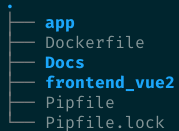
23.04.2021
Today I need to hand in the project so I took a screenshot to show how far this project got. Many features are still missing and everything is completely unstyled but the core functionality works. 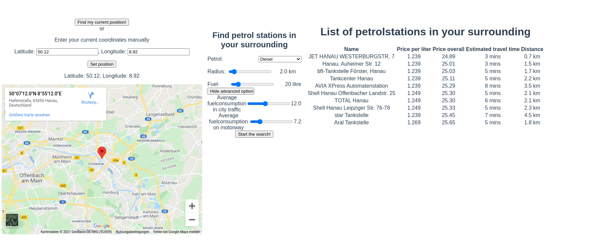
Code
Frontend
Structure:
babel.config.js:
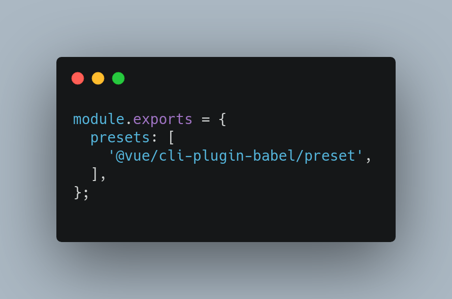
package.json:
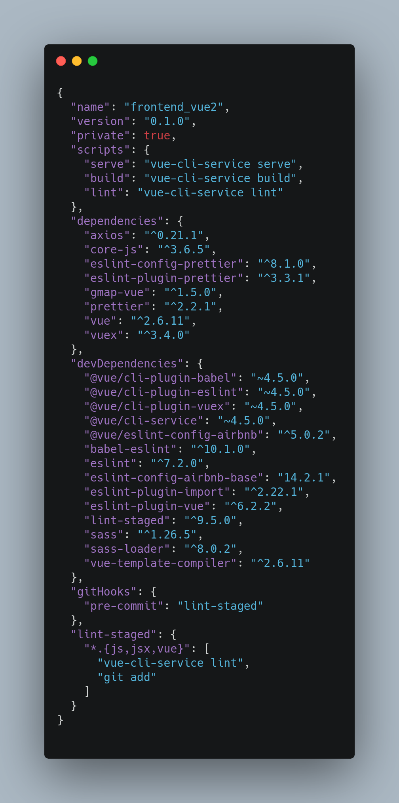
index.html:
App.vue:
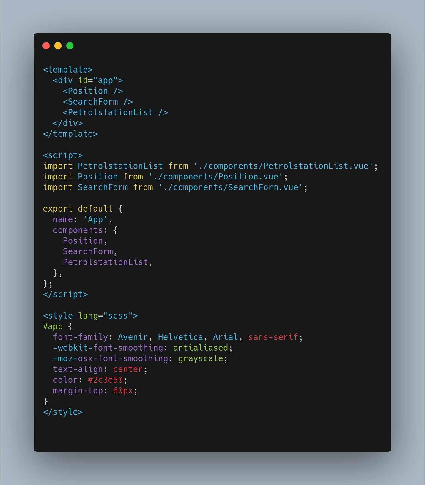
PetrolStationList.vue:
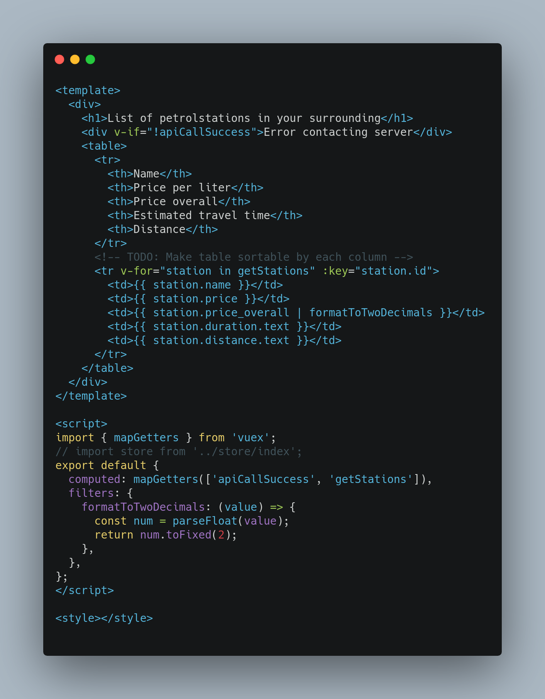
Position.vue:
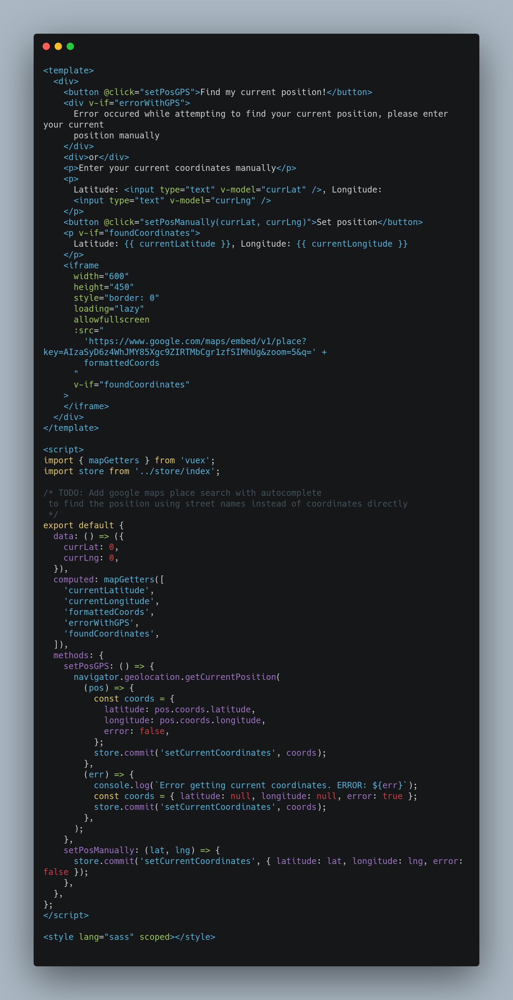
SearchForm.vue 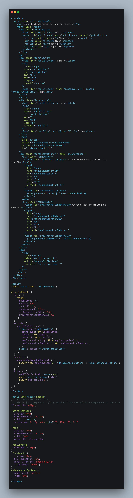
main.js:
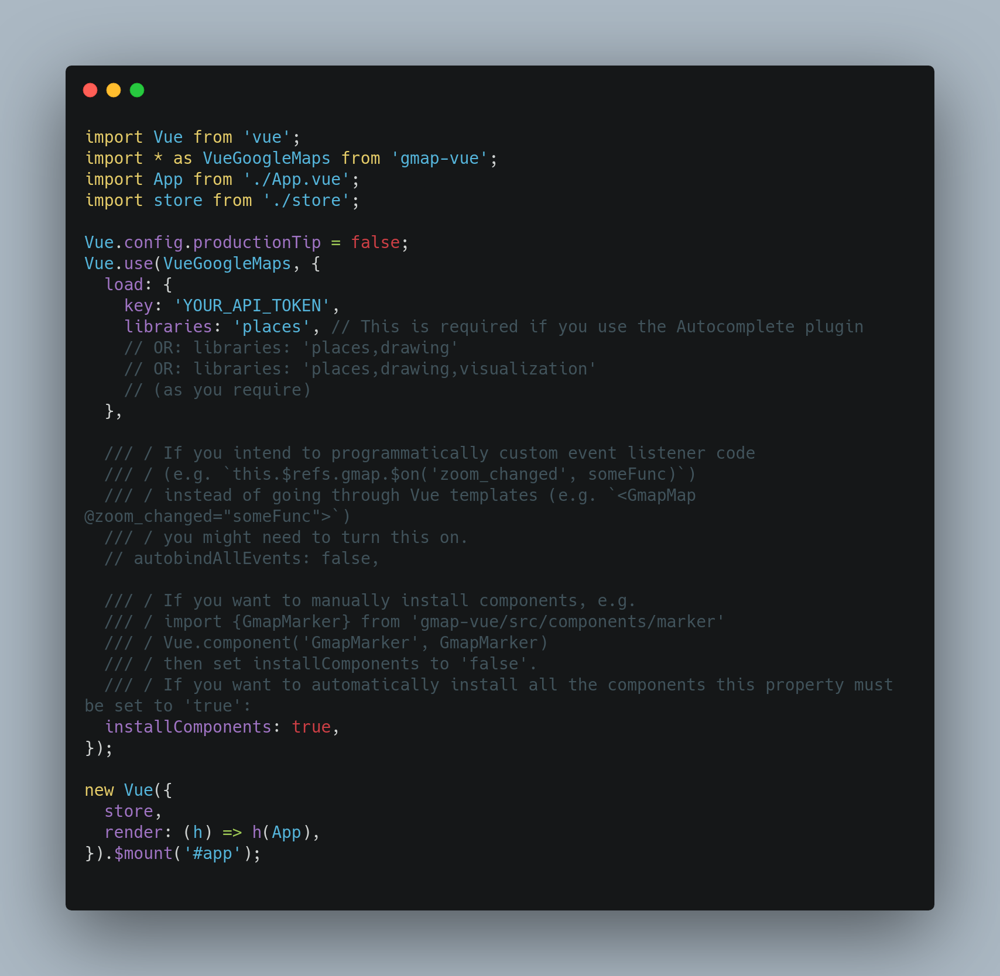
index.js:
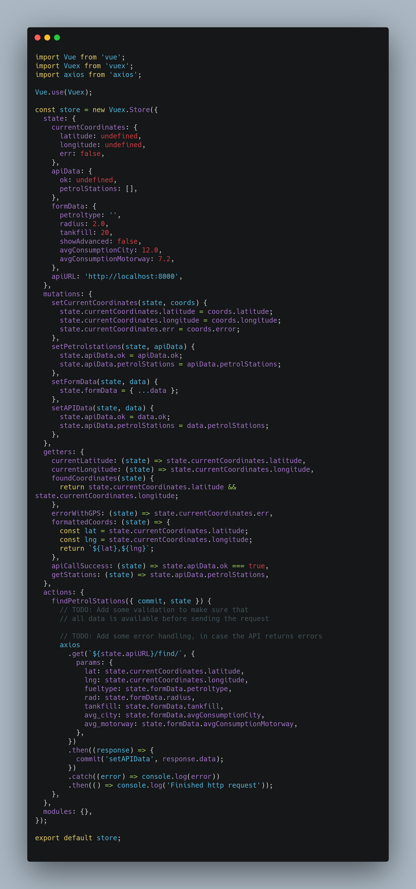
vue.config.js:
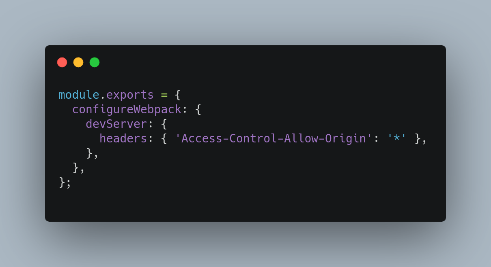
yarn.lock: This file is just a that is autogenerated from package.json, no point showing it, as it just hashes of installed packages.
Backend
Structure:
main.py:
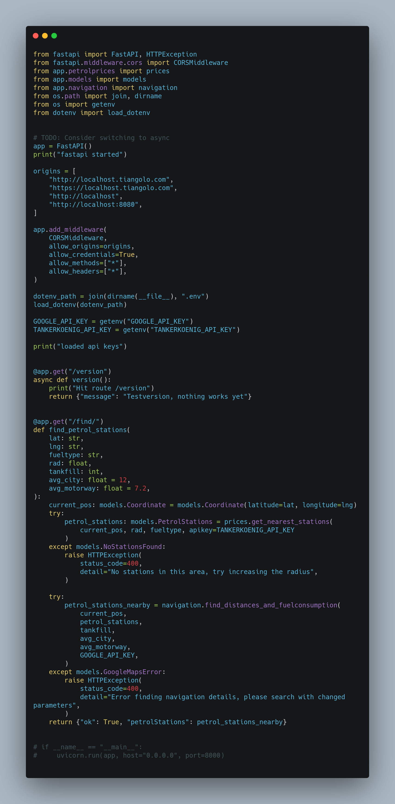
models.py:
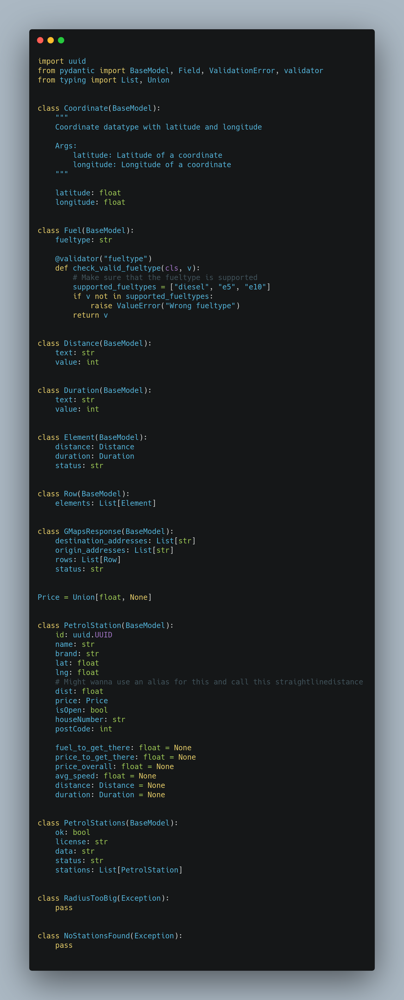
navigation.py:
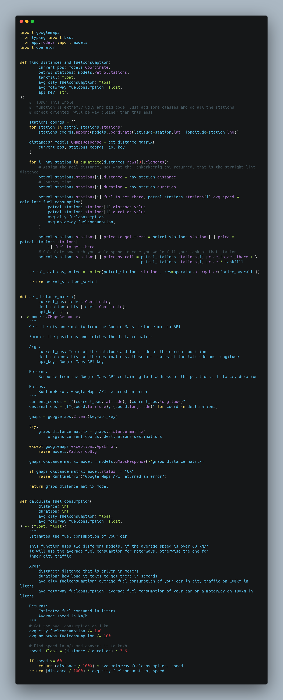
prices.py: 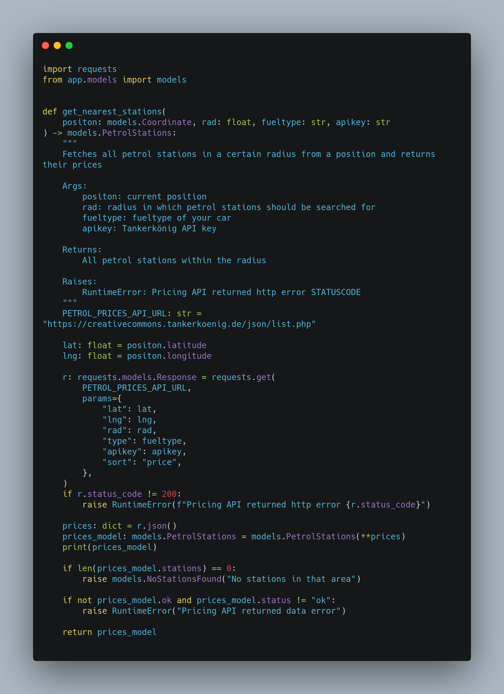
test_navigation.py:
test_prices.py:
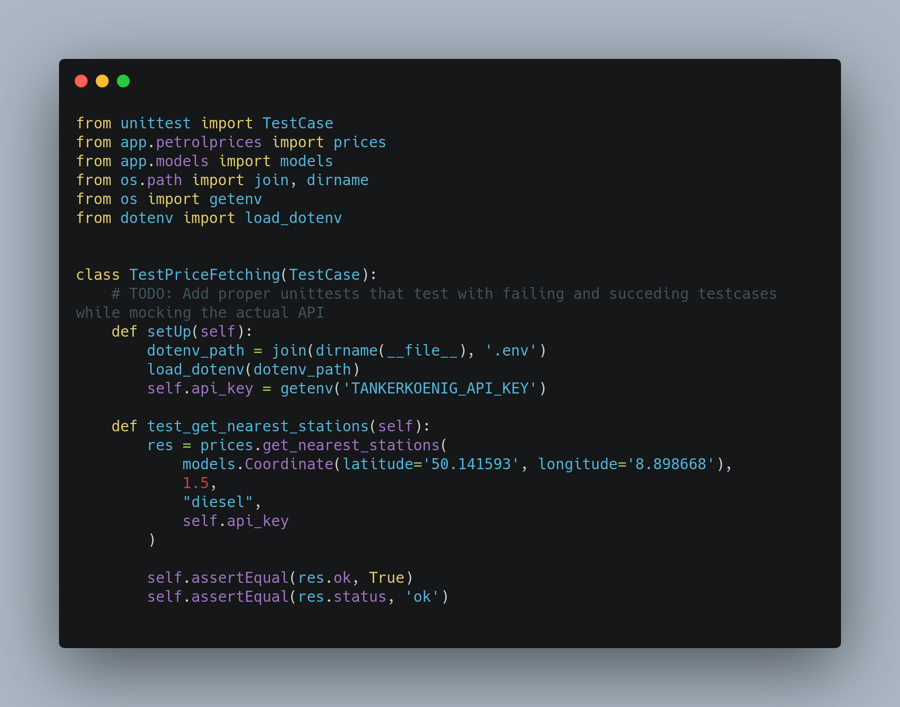
API documentation
The RESTful API has two different routes:
/version: Just prints the current version/find/: Takes different parameters, returns any found petrolstations
Parameters of /find/:
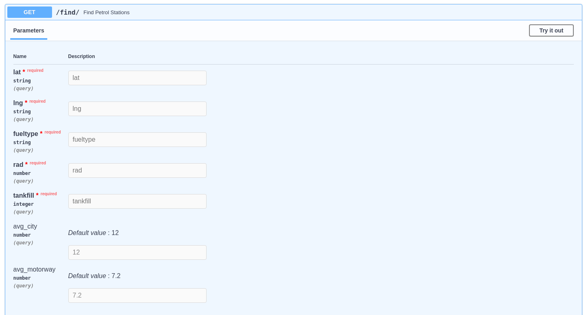
A sample request and response could look like this: 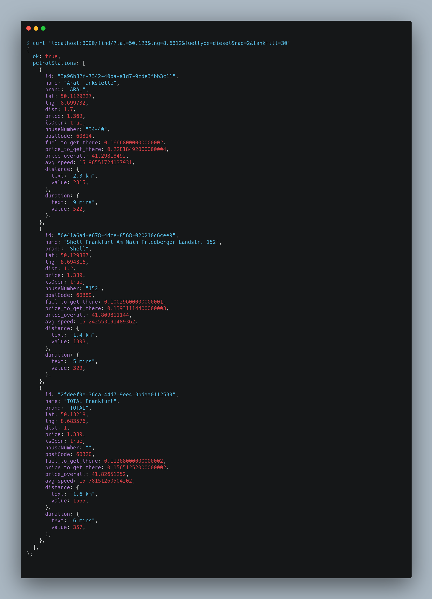